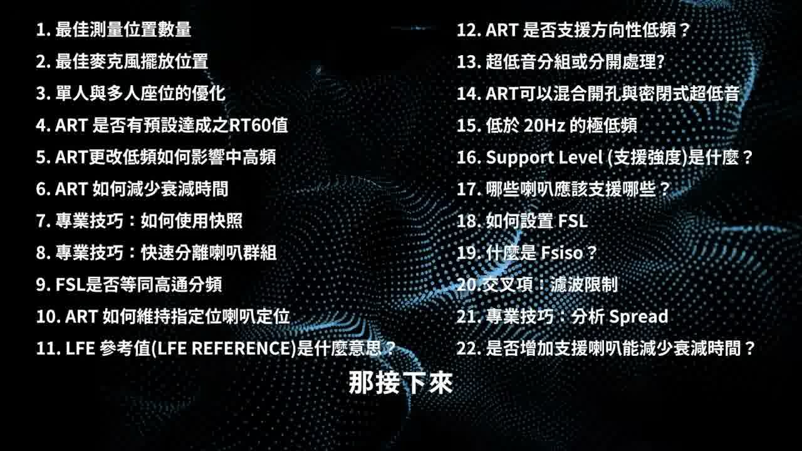
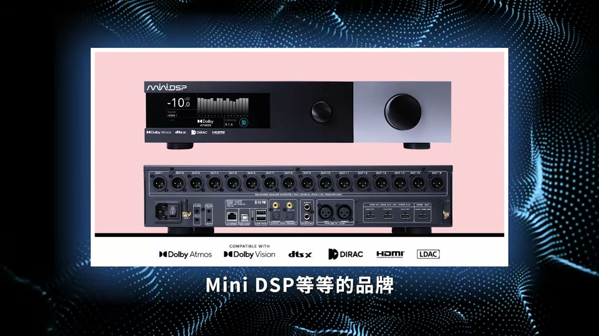
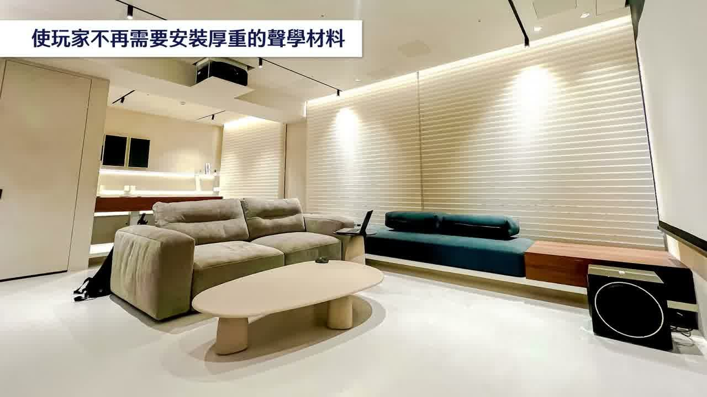
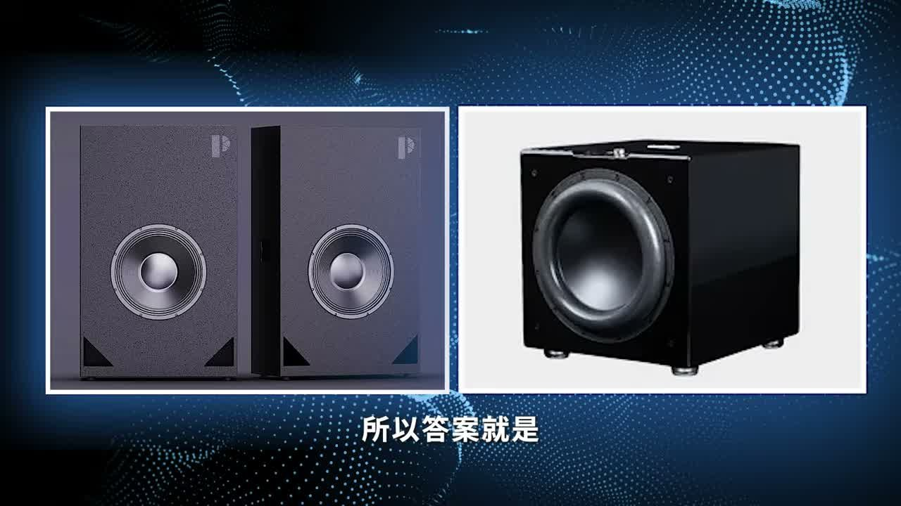
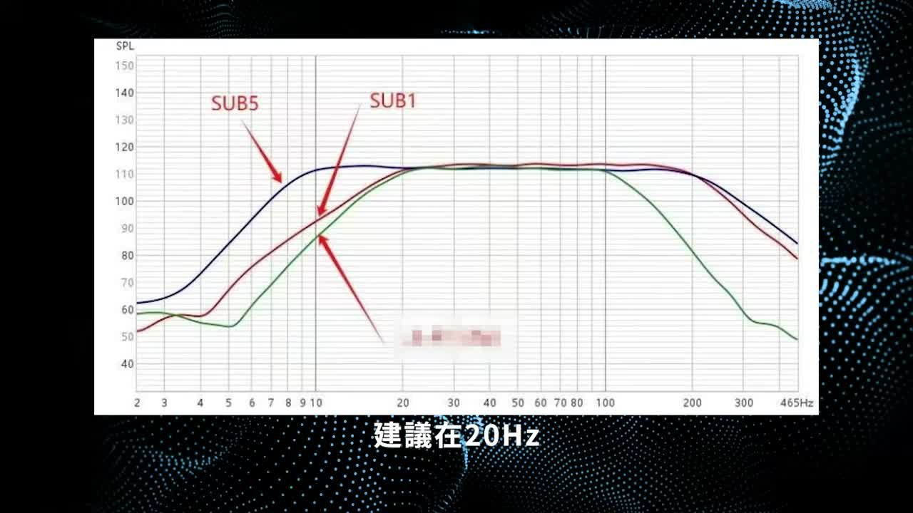
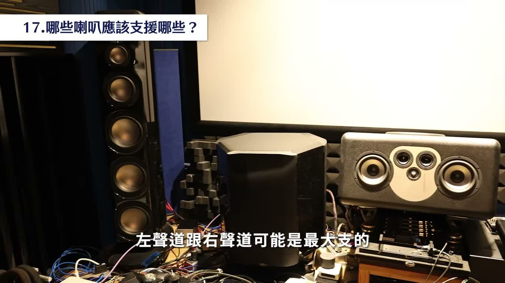

本篇整理自丹爸（丹爸YT紀）2026-01-26 影片《美國 DRC 大咖 Joe 也服了？台灣丹爸深度解析瑞典 Dirac 原廠與美國 DRC 名家的 ART 技術對談》，全長 42 分 32 秒。 內容為 Dirac 原廠代表 Joss 與 Magic Beans 軟體作者 Joe N-Tell 的技術對談重點，加上丹爸兩年來調校數十套系統的實務經驗。
為什麼這篇值得讀
站上原本六篇 Dirac 教學講的是怎麼操作（量測流程、曲線微調、Cinema 40 客製步驟）。這一篇不同，講的是為什麼這樣設計——ART 的運作原理、各項參數背後的邏輯，以及原廠自己怎麼解釋那些說明書上沒寫清楚的東西。
先把最重要的三件事講在前面：
- ART 的作動範圍只有 20Hz–150Hz，卻會讓中高頻也變好。原因在下面第 4 點。
- 量測點數不是越多越好——原廠說「喇叭數＋1」，但實務上會撞到系統上限，而且兩聲道系統量太多點反而失去活力。
- Support Level 是負值（-6 / -18 / -24dB），數字越小代表支援越強，這個方向很容易搞反。
本片完整涵蓋 22 個 ART 技術問題，以下是原始清單：

（影片 22:30）這項技術現在的普及狀況
ART 在風暴（StormAudio）處理器獨佔 19 個月之後，Dirac 決定下放到其他品牌：
| 品牌／機種 | 狀態 |
|---|---|
| StormAudio | 最早獨佔，共 19 個月 |
| Denon、Marantz | 已支援 |
| Monoprice Monolith HTP-1 | 已支援（ART 為 US$299 付費授權，可單買或與 Dirac Live Bass Control 綁售） |
| Onkyo、miniDSP 等 | 陸續加入 |
丹爸的判斷是「勢不可擋」，未來市面上多數處理器都會用上 ART。

（影片 0:17）ART 到底在做什麼
簡單說：ART 讓系統中指定的揚聲器，除了發出你要聽的直接音之外，同時發出反向的能量波，去中和空間裡造成駐波與 SBIR（Speaker Boundary Interference Response，喇叭邊界干涉）的反射音。
原理上像降噪耳機，但實際做的事情複雜得多——它會針對不同位置與頻率做多麥克風量測，計算出空間的頻率與時域回應聲學模型，再據此校正反射與殘留能量。
原廠自己的比喻是：ART 像在拼一幅聲音拼圖，用現場所有指定的揚聲器，拼出你需要的聲音。
帶來的三個好處
- 不必再堆厚重的聲學材料，能維持視聽空間的美觀（ART 只建議房間裡保留必要的吸音處理）
- 駐波與 SBIR 被解決後，喇叭的實力才能完整發揮
- 低頻能量受控後，中高頻的細節會自然浮現

（影片 2:41）Part 1 — 量測
1.1 要量幾個點？原廠說「喇叭數＋1」
Dirac 量測的目的不是聽每一個點的聲音，而是了解房間裡的波前（Wave Front）——聲波傳導時，一個波接一個波的前端傳遞狀況。
原廠的理想值是揚聲器數量再加 1。以丹爸視聽室的 26 支喇叭為例，理想是量 27 點。軟體本身則要求至少 6 到 9 個位置，覆蓋主聆聽區。
樣本數不足會怎樣？演算法對房間波前的理解不夠，結果就是補償過度或補償不足。
丹爸經驗談：27 點實務上做不到，而且不一定更好。
第一，Dirac 給的傳輸頻寬是固定的，資料量太大系統會直接 crash。
第二，所有校正技術最終都要回到聽感。以兩聲道系統來說，為了保存空間特性，量太多點聲音反而會失去活力。
1.2 麥克風要放哪裡
MLP（Main Listening Position，皇帝位）必須量得非常精準——放在你實際坐的位置、耳朵的高度，不能馬虎。
第 2 到第 9 點呢？放在「耳朵可能出現的位置」。想像你看電影時身體會左右移動、前後靠，就在 MLP 周圍 60 公分範圍內模擬那些姿勢去量。順序無所謂，重點是收集足夠的資料讓系統理解波前。
1.3 有第二排、第三排座位怎麼辦
原廠建議的順序是：
- 先乖乖照 MLP（通常是第一排中間）做 60 公分範圍內的 9 點量測
- 先 Save 成一個 Preset —— 這是「獨樂樂」的設定，一個人聽最好
- 用相同的資料繼續往下量，把麥克風放到第二排、第三排，增加樣本數
- 量完再存一個 Preset —— 這是「眾樂樂」的設定
不同機種能存的 Preset 數量差很多：StormAudio 有 20 組，Denon 與 Marantz 目前是 3 組。
丹爸經驗談：如果真的有第二、三排座位，他認為應該連揚聲器配置一起改——設置第二組、甚至第三組側環繞。StormAudio 的處理器對任何聲道都可以用一對、兩對甚至三對揚聲器來達成，這樣每一排的包覆感與環繞聽感才會好。
Part 2 — RT60 與中高頻
2.1 ART 有預設的 RT60 值嗎？沒有
RT60 是混響時間（reverberance time）：室內音源停止發聲後，迴音音壓降低 60dB 所需的時間。
Dirac 實驗室裡確實希望把 RT60 壓得越低越好，甚至想做到「不加任何聲學材料，也能打造出等同實體吸音處理的衰減特性」。
但 Dirac 並不會刻意強調要做到多低的 RT60。 圖表裡那個 RT60 數值只是參考值。ART 真正要改善的是整個音場與響應，不是達到某個特定的混響時間。
丹爸經驗談：兩聲道與多聲道玩家的偏好剛好相反。
- 兩聲道玩家傾向 RT60 高一點，帶來比較豐潤、有包圍感的音場
- 多聲道玩家因為喇叭多，較低的 RT60 能帶來更明確穩定的音場，細節也更豐富
做法是：第一次調完先聽，再根據聽感修正 ART 參數。
2.2 為什麼只處理到 150Hz，中高頻卻變好了
這是很多人的疑問。ART 的作動範圍明明是 20Hz 到 150Hz 的低頻段。
答案是：當低頻能量在空間中停留的時間受到控制，它就不會去屏蔽中頻與高頻。低頻不再糊住整個空間，150Hz 以上的細節自然大量浮現。
Part 3 — 進階操作
3.1 快照（snapshot）：省下重算的時間
Dirac 只要動一個設定，基本上就會要求你按 Calculate 重新計算，而且非常花時間。
更關鍵的是——它叫 Dirac Live 是有原因的：資料要送到瑞典的資料庫去運算。所以即使參數完全相同，兩次算出來的結果也可能不一樣。想回到原本一模一樣的設定？沒辦法，因為每次計算都是即時的。
快照就是為了解決這件事：把算完的結果原封不動保存下來，之後可以快速叫回，也能用來比對不同參數各自算出來的結果。
3.2 喇叭群組分離
ART 裡可以把喇叭按用途分群（前置、環繞、超低音等），方便做細部校正與參數管理。
什麼時候該拆開？
- 天空聲道的喇叭有大有小 → 大小支要拆開
- 距離差異過大的喇叭不宜同群 —— 因為與聆聽位置距離不同，單體的離軸效應不同，量測結果可能差很多，需要各自設定該有的 ART 參數
3.3 定位會不會被搶走？
Joe 問了一個好問題：既然所有喇叭都同時在發聲（不管直接音還是反向音），怎麼維持指定喇叭的定位？左前聲道要怎麼還是左前聲道的聲音？
Joss 的回應：藉由群組控制與支援強度的調整，讓聲音的拼圖在準確的時間內到達準確的聆聽位置，聽覺定位就不會被其他喇叭搶走。這也呼應了前面——量測點越多，ART 對波前理解越完整，定位就越精準。
⚠️ Joss 特別提醒：對單一揚聲器下了過高的 ART 支援強度，反而可能造成定位模糊。因為它的直接音與反向音要同時輸出。
丹爸經驗談：如果主揚聲器的低頻下潛不錯，強烈建議超低音的支援上限不要拉到 150Hz、不要坐滿。好處有兩個：超低音本身更輕鬆，而且你對超低音位置的指向性感知會更低。
Part 4 — LFE 與超低音
4.1 LFE Reference 是什麼
LFE 參考值決定 LFE 訊號校正後的相位——也就是到達聆聽位置的時間要對準哪一支揚聲器。
設定在前置就跟著前置，設定在中置就跟著中置，超低音的定位會跑到那邊去。
- 一般最佳選擇：中置揚聲器
- 若使用虛擬中置（Phantom Center）、系統中沒有實體中置：設在左或右揚聲器都可以
4.2 方向性低頻
意思是在分頻點之後，把低頻交給指定的超低音執行——把一個聲道的聲音切開，分頻點以上給某支揚聲器，以下給某支超低音，接近分音的概念。
Joss 說怎麼做：在 ART 中指定某支超低音去支援那支揚聲器。例如左揚聲器分頻點設在 50Hz，50Hz 以下拉一支專屬超低音，針對 20–50Hz 與它結合。
丹爸經驗談：這個「沒經驗，從來沒這樣做過」，但值得嘗試。代價是那支超低音要專門服務某一支揚聲器，就沒辦法再參與超低音群組的工作。
4.3 超低音該聚在一起還是分開？
Joss 的回應：如果各支超低音的位置與響應差異很大，建議分開處理。
分開之後它們仍然會協力完成同一條目標曲線——主要發聲仍是主超低音，其他超低音從旁支援。而且每一支都可以精細設定支援範圍與支援強度，達成目標會更輕鬆，對環境的影響也更小。
4.4 開孔式與密閉式可以混用嗎？可以
Joss 的回應：ART 會根據每一支揚聲器（含超低音）的實際響應特性與要達成的目標曲線，個別設定它需要的濾波器，權衡每一支能帶來的貢獻——不是齊頭式地讓所有超低音做同樣的事。
所以不同種類的超低音可以整合。

（影片 21:43）丹爸經驗談：超低音多多益善。
既然是拿所有超低音去達成同一條目標曲線，不必擔心超低音變多低頻就會過量——低頻的多寡不是由數量決定，是由目標曲線決定的。數量多反而能讓房間裡的低頻響應更平衡。
但選擇很重要：既然 ART 支援頻段是 20–150Hz，超低音必須能下潛到 20Hz，而且建議在 20Hz 仍維持 100dB 的輸出，放進 ART 系統才真的有幫助。

（影片 22:05）4.5 20Hz 以下的極低頻（Infrabass）
如果你的超低音（或主喇叭）能低到 20Hz 以下，ART 裡會出現一個核取方塊。勾選之後，20Hz 以下的極低頻會不經處理直接放行，讓低頻持續往下延伸到你的器材能力極限。
Part 5 — 參數詳解
5.1 Support Level（支援強度）
概念是：這支揚聲器要拿出多少力量去幫助別人。
它是負值——例如 -6、-18、-24dB。原廠文件的標稱值是 -18dB：
| 設定 | 效果 |
|---|---|
| -24dB | 該支援群組貢獻更多 |
| -18dB | 標稱值 |
| -6dB | 該支援群組貢獻較少 |
⚠️ 這個方向很容易搞反。設定入口在 Dirac Live 視窗右側 LFE 群組的「…」符號。
Joss 在訪談中提到，維持預設的負值設定基本上是蠻安全的，可以先照預設值走再視聽感調整。
5.2 FSL（Frequency Support Low，支援頻率下限）
控制支援範圍的最低頻率——這支喇叭要往下支援別人到哪一個頻率為止。
Joe 直接問了：FSL 是不是就等於高通分頻？
Joss 的回答是否定的。 FSL 不是傳統的分頻點，不是「這個頻率以下就直接砍掉」，而是在該頻段以下做漸進式滾降。它控制的是這支喇叭在 ART 裡支援別人的頻段底線。
實際用途是防止小喇叭被灌進它撐不住的低頻。所以喇叭分群時要照能力分——小喇叭跟小喇叭一組、大喇叭跟大喇叭一組，各自設定合適的支援下限。
5.3 Fsiso：ART 的最高處理頻段
這個要跟 FSL 分清楚——它們是相反的兩端。
控制面板上有一串叫 Fsiso 的字母，它是個縮寫，但連 Joss 自己都忘記是哪幾個字的縮寫了。
實務上可以把它理解為 ART 的最高處理頻段，而且是整個系統的最高處理頻段。
預設 150Hz，通常不需要改。 大多數落地／書架揚聲器做到 150Hz 都沒問題。
5.4 CROSS TERMS：ART 的「支援點數」
Joss 向 Joe 解釋了這個專有名詞，台灣玩家給它的名字是 ART 的支援點數。
概念像遊戲裡的行動點數：每執行一項支援任務就會消耗一定點數，而總點數是有限的。
| 機種 | 支援點數 |
|---|---|
| Denon、Marantz | 固定 98 點（不論機器多高階，受 DSP 板限制） |
| StormAudio | 最多 400 多點 |
這個數字來自機器內 DSP 板的算力，不是軟體限制。
這也是為什麼 5.6 的 Spread 分析特別重要——點數有限時，你必須判斷哪個支援群組值得留、哪個該省下來。
5.5 哪些喇叭該支援哪些？
這件事要看現場的揚聲器陣容而定，但有兩個原則：
- 左、右聲道通常是陣容中最大支的，可以拿出力量支援別人到中頻。ART 裡的預設值是 50Hz。
- 中置揚聲器建議專心做自己的事、不去支援別人。 因為中置在前場約佔 75% 的用量，本身工作已經很重，讓它專注反而音色較不受影響。
這一點是 Joe 與 Joss 兩人共同的看法。

（影片 24:39）5.6 Spread（離散度）
Spread 用來觀察分析不同量測位置之間，頻率與相位的一致性。
- Spread 越窄 → 各聆聽點聽到的差異越小
- Spread 越肥大 → 各位置之間差異越大
怎麼用它做決策：當 ART 的支援點數有限時，把某個群組加進去貢獻給別人，到底有沒有好處？看 Spread。
- 放下去 Spread 變窄 → 有幫助，留著
- 放下去完全沒改善 → 省下來，讓它去幫別的喇叭
5.7 增加支援喇叭數量，就能減少衰減時間嗎？
Joe 的最後一問，Joss 的回答是「Yes and No」。
關鍵不在數量，而在你是不是用了正確的喇叭去支援。合適的支援喇叭確實能改變低頻能量分佈與衰減行為；但配置不當也可能產生相位干涉等反效果。
Joss 強調：揚聲器良好的擺位，絕對是一切設置的基礎。
丹爸補充一個容易被忽略的陷阱：對稱的擺位可能造成對稱的問題。在一個左右對稱的空間裡，兩側牆面距離一模一樣，左邊喇叭有的問題右邊也會有——這一點從量測曲線就看得出來，兩邊的問題會長得一樣。
重點回顧
| 主題 | 結論 |
|---|---|
| 量測點數 | 原廠理想＝喇叭數＋1；軟體要求至少 6–9 點；實務上量太多會 crash，兩聲道還可能失去活力 |
| 麥克風位置 | MLP 要極精準；其餘點放在 MLP 周圍 60 公分、耳朵可能出現的位置 |
| 多排座位 | 先存「獨樂樂」Preset，再往後排加量測存「眾樂樂」Preset |
| RT60 | 只是參考值，ART 目標是音場與響應而非特定混響時間；兩聲道偏好高、多聲道偏好低 |
| 中高頻變好 | 低頻能量受控後不再屏蔽中高頻 |
| snapshot | Dirac Live 每次運算結果可能不同，快照是唯一能原封保存結果的方法 |
| LFE Reference | 決定 LFE 相位對準哪支喇叭；一般選中置，虛擬中置時選左或右 |
| 超低音 | 響應差異大就分開處理；可混用開孔與密閉式；多多益善，但要能在 20Hz 維持 100dB |
| Support Level | 負值，-24dB 貢獻多、-18dB 標稱、-6dB 貢獻少 |
| FSL | 支援下限，不是高通分頻，是漸進式滾降；小喇叭要小心別超過負荷 |
| Fsiso | ART 的最高處理頻段（與 FSL 相反端），預設 150Hz，通常不用改 |
| CROSS TERMS | 支援點數；Denon/Marantz 固定 98 點、StormAudio 400 多點，受 DSP 算力限制 |
| 誰支援誰 | 左右聲道最大支可支援到中頻（預設 50Hz）；中置佔前場 75% 用量，建議不支援別人 |
| Spread | 越窄越好；用它判斷某個支援群組該不該留 |
| 支援喇叭越多越好？ | Yes and No——關鍵是用對喇叭，擺位才是基礎 |
資料來源與說明
- 影片：丹爸YT紀《美國 DRC 大咖 Joe 也服了？台灣丹爸深度解析瑞典 Dirac 原廠與美國 DRC 名家的 ART 技術對談》（2026-01-26，42:32） YouTube
- 對談雙方：Dirac 原廠代表 Joss ｜ Magic Beans 軟體作者 Joe N-Tell
- 官方文件：Dirac Live ART 說明、ART Channel Group and Support Settings
關於本篇的整理方式：影片沒有字幕，逐字稿以語音辨識產生後，專有名詞逐一比對官方文件與影片內建字幕校正（例如 Support Level 的標稱值、F-support Low 的正確寫法、機種型號）。 丹爸的實務經驗談一律標示為引用框，與 Dirac 原廠說法分開，方便讀者分辨哪些是官方立場、哪些是玩家實測心得。 部分人名（Joss）依影片內建字幕寫法，未能進一步查得完整姓名。
工具版本：2026-07-31